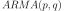
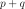
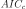

WhittleFactoryState¶
-
class
WhittleFactoryState(*args)¶ Last state recorded of a scalar ARMA process.
Parameters: - p : int
AR order of the estimated .
- ARMACoeff : sequence of float of dimension 
Coefficients of the AR then MA part of the estimated process.
- sigma2 : float
Variance of the white noise.
- criteria : sequence of float of dimension 3
The values of the criteria AIC,  (corrected AIC) and BIC on the estimated process.
- timeGrid :
RegularGrid Time grid of the process.
Examples
Create a time series from a scalar ARMA(4,2) and a normal white noise:
>>> import openturns as ot >>> myTimeGrid = ot.RegularGrid(0.0, 0.1, 20) >>> myWhiteNoise = ot.WhiteNoise(ot.Triangular(-1.0, 0.0, 1.0), myTimeGrid) >>> myARCoef = ot.ARMACoefficients([0.4, 0.3, 0.2, 0.1]) >>> myMACoef = ot.ARMACoefficients([0.4, 0.3]) >>> myARMAProcess = ot.ARMA(myARCoef, myMACoef, myWhiteNoise) >>> myTimeSeries = myARMAProcess.getRealization() >>> myProcessSample = myARMAProcess.getSample(20)
Estimate the ARMA process specifying a range for the orders:
>>> pIndices = [1, 2] >>> qIndices = [4, 5] >>> myFactory_Range = ot.WhittleFactory(pIndices, qIndices)
Print all the models and their state:
>>> myWhittleHistory = myFactory_Range.getHistory() >>> for i in range(myWhittleHistory.getSize()): ... model_i = myWhittleHistory[i] ... arma = model_i.getARMA() ... print('Order(p,q) = '+str(model_i.getP())+', '+str(model_i.getQ())) ... print('AR coeff = '+str(model_i.getARCoefficients())) ... print('MA coeff = '+str(model_i.getMACoefficients())) ... print('White Noise - Sigma = '+str(model_i.getSigma2())) ... print('Criteria AICc, AIC, BIC = '+str(model_i.getInformationCriteria()))
Attributes: thisownThe membership flag
Methods
getARCoefficients()Accessor to the AR coefficients of the scalar ARMA process. getARMA()Accessor to the estimated scalar ARMA. getClassName()Accessor to the object’s name. getId()Accessor to the object’s id. getInformationCriteria()Accessor to the values of the criteria AIC, and BIC. getMACoefficients()Accessor to the MA coefficients of the scalar ARMA process. getName()Accessor to the object’s name. getP()Accessor to AR order. getQ()Accessor to MA order. getShadowedId()Accessor to the object’s shadowed id. getSigma2()Accessor to the variance of the white noise. getTheta()Accessor to the coefficients of the scalar ARMA process. getTimeGrid()Accessor to the time grid of the scalar ARMA process. getVisibility()Accessor to the object’s visibility state. getWhiteNoise()Accessor to the white noise defining the scalar ARMA process. hasName()Test if the object is named. hasVisibleName()Test if the object has a distinguishable name. setName(name)Accessor to the object’s name. setShadowedId(id)Accessor to the object’s shadowed id. setVisibility(visible)Accessor to the object’s visibility state. -
__init__(*args)¶ Initialize self. See help(type(self)) for accurate signature.
-
getARCoefficients()¶ Accessor to the AR coefficients of the scalar ARMA process.
Returns: - ARCoeff :
ARMACoefficients The AR coefficients of the linear recurrence defining the process.
- ARCoeff :
-
getClassName()¶ Accessor to the object’s name.
Returns: - class_name : str
The object class name (object.__class__.__name__).
-
getId()¶ Accessor to the object’s id.
Returns: - id : int
Internal unique identifier.
-
getInformationCriteria()¶ Accessor to the values of the criteria AIC, and BIC.
Returns: - criteria :
Pointof dimension 3 Values of the criteria AIC, (corrected AIC) and BIC of the estimated model.
- criteria :
-
getMACoefficients()¶ Accessor to the MA coefficients of the scalar ARMA process.
Returns: - MACoeff :
ARMACoefficients The MA coefficients of the linear recurrence defining the process.
- MACoeff :
-
getName()¶ Accessor to the object’s name.
Returns: - name : str
The name of the object.
-
getP()¶ Accessor to AR order.
Returns: - p : int
Order of the AR part of the estimated model.
-
getQ()¶ Accessor to MA order.
Returns: - q : int
Order of the MA part of the estimated model.
-
getShadowedId()¶ Accessor to the object’s shadowed id.
Returns: - id : int
Internal unique identifier.
-
getSigma2()¶ Accessor to the variance of the white noise.
Parameters: - sigma2 : positive float
Variance of the white noise.
-
getTheta()¶ Accessor to the coefficients of the scalar ARMA process.
Returns: - coeff :
Point The AR and MA coefficients of the linear recurrence defining the process.
- coeff :
-
getTimeGrid()¶ Accessor to the time grid of the scalar ARMA process.
Returns: - timeGrid :
RegularGrid Time grid over which the ARMA process is defined.
- timeGrid :
-
getVisibility()¶ Accessor to the object’s visibility state.
Returns: - visible : bool
Visibility flag.
-
getWhiteNoise()¶ Accessor to the white noise defining the scalar ARMA process.
Returns: - whiteNoise :
WhiteNoise The white noise of the estimated model.
- whiteNoise :
-
hasName()¶ Test if the object is named.
Returns: - hasName : bool
True if the name is not empty.
-
hasVisibleName()¶ Test if the object has a distinguishable name.
Returns: - hasVisibleName : bool
True if the name is not empty and not the default one.
-
setName(name)¶ Accessor to the object’s name.
Parameters: - name : str
The name of the object.
-
setShadowedId(id)¶ Accessor to the object’s shadowed id.
Parameters: - id : int
Internal unique identifier.
-
setVisibility(visible)¶ Accessor to the object’s visibility state.
Parameters: - visible : bool
Visibility flag.
-
thisown¶ The membership flag